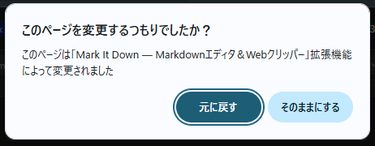

インストールありがとうございます
ブラウザだけで完結する Markdown ノートアプリです。
まず最初に
このダイアログが表示されたら
Chrome がインストール直後に確認ダイアログを表示することがあります。 Mark It Down を使うには「そのままにする」を選んでください。

元の拡張機能に戻したくなったら、chrome://extensions で Mark It Down をオフにすれば OK です。
Ctrl + T で新しいタブを開いてみてください
✓ 「Mark It Downへようこそ」というノートが表示されたら成功です
3つの使い方
New Tab
Ctrl + T で開くたびにエディタが起動。メモ帳感覚で使えます。
Side Panel
ツールバーの Mark It Down アイコンをクリック（Extensions のパズルピースアイコンからピン留め）。Web ページの横にエディタを開けます。ショートカットは chrome://extensions/shortcuts で登録できます。
Web Clipper
右クリック →「Save selection」「Save page」で Web ページを Markdown として保存。サイドパネルが自動で開きます。
データについて
- すべてのノートはブラウザ内にローカル保存
- クラウド同期はデフォルトで無効（Git バックアップはオプション）
- ブラウザのキャッシュ削除ではノートは消えません
- 拡張機能を削除するとデータも消えます — エクスポート機能をご利用ください
できること
- Markdown エディタ — ライブプレビュー、LaTeX 数式、Mermaid 図表に対応
- Git 同期 — GitHub / GitLab にバックアップ
- エクスポート — PDF・DOCX・HTML・PNG に書き出し
- 4つのテーマ — Light・Dark・Parchment・Candlelight
- フォーカスモード — タイプライター風スクロールで集中執筆